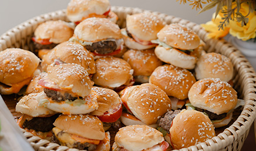

High-volume · Low-cost · Event production Skala besar · Kos rendah · Pengeluaran majlis
The Ultimate Mini Sliders Mini Slider Terbaik
One 400g pack of minced beef makes exactly 12 sliders (~33g per patty). The patties are prepped the night before, so assembly on the day is a fast griddle line. Satu pek 400g daging kisar menghasilkan tepat 12 slider (~33g sekeping). Patty disediakan pada malam sebelumnya, jadi pemasangan pada hari majlis menjadi pantas di atas griddle.

1. The Beef Mix1. Adunan Daging
- Minced beef (daging kisar)Daging kisar400 g
- Onion powderSerbuk bawang1 tsp
- Garlic powderSerbuk bawang putih0.5 tsp
- Fine saltGaram halus0.5 tsp
- Black pepperLada hitam0.5 tsp
- Worcestershire sauceSos Worcestershire1 tsp
- Beaten egg (≈ half a standard egg)Telur pukul (≈ separuh telur biasa)2 tbsp
2. Buns & Veggies2. Roti & Sayuran
- Fuji Bakery plain baby bunsRoti kecil kosong Fuji Bakery12 pcs
- Medium tomatoes (firm, lemon-sized, thinly sliced)Tomato sederhana (keras, saiz limau, dihiris nipis)1–2
- Iceberg lettuce (finely shredded)Salad iceberg (dicarik halus)1 head
- Cheddar slices (quartered → 12 squares)Keping cheddar (suku → 12 cebis)3 slices
- Butter (for toasting buns)Mentega (untuk membakar roti)1 tbsp
3. Bun Glaze & Sauce3. Salutan Roti & Sos
- Remaining beaten egg + water (egg wash)Baki telur pukul + air (salutan telur)+1 tsp water
- Sesame seedsBijan1 tbsp
- MayonnaiseMayonis2 tbsp
- Chili sauce (50/50 saus kahwin mix)Sos cili (gaul saus kahwin 50/50)2 tbsp
-
The mixAdunan
Place the minced beef in a large bowl. Sprinkle the onion powder, garlic powder, salt, pepper and Worcestershire sauce evenly over the meat, then pour in the beaten egg.Letakkan daging kisar dalam mangkuk besar. Taburkan serbuk bawang, serbuk bawang putih, garam, lada dan sos Worcestershire sama rata, kemudian tuang telur pukul.
-
The kneadMenguli
Knead thoroughly by hand for 2 minutes until the texture turns sticky, pasty and binds together tightly.Uli sepenuhnya dengan tangan selama 2 minit sehingga teksturnya menjadi melekit, pekat dan terikat rapat.
-
PortioningMembahagi
Pinch off ping-pong-sized balls weighing exactly 32–33g and roll into smooth spheres.Cubit bebola sebesar bola ping-pong seberat tepat 32–33g dan gulung menjadi bebola licin.
-
ShapingMembentuk
Flatten between your palms until very flat and wide — significantly wider than the buns, as they shrink and thicken on the heat.Picit antara tapak tangan sehingga sangat nipis dan lebar — jauh lebih lebar daripada roti, kerana ia akan mengecut dan menebal apabila dipanaskan.
-
The fridge stackSusunan peti sejuk
Line a plate with a rigid separator (baking paper or shiny banana leaves). Lay a layer of patties, add a divider sheet, and repeat. Wrap tightly and refrigerate overnight.Alas pinggan dengan pemisah keras (kertas pembakar atau daun pisang berkilat). Susun selapis patty, letak pemisah, dan ulang. Balut rapat dan simpan dalam peti sejuk semalaman.
-
Prep the topsSediakan bahagian atas
Slice the baby buns in half. Arrange the top buns face-down on an oven or air-fryer tray.Belah roti kecil kepada dua. Susun bahagian atas roti menghadap ke bawah di atas dulang ketuhar atau air fryer.
-
Glaze & seedSalut & taburkan bijan
Lightly paint the tops with the thinned leftover egg wash, then sprinkle sesame seeds generously over the wet glaze.Sapu bahagian atas dengan baki salutan telur yang dicairkan, kemudian taburkan bijan dengan banyak di atas salutan yang masih basah.
-
Flash-fryBakar pantas
Air-fry or bake at 180°C for 45–60 seconds. Watch like a hawk — pull them the moment the glaze sets shiny and the seeds turn faint golden.Bakar dalam air fryer atau ketuhar pada 180°C selama 45–60 saat. Perhatikan dengan teliti — keluarkan sebaik sahaja salutan menjadi berkilat dan bijan bertukar keemasan.
-
The toastMembakar roti
Melt a sliver of butter on a hot flat griddle. Toast the cut sides of the buns for 30 seconds until golden, then set aside.Cairkan sedikit mentega di atas griddle rata yang panas. Bakar bahagian dalam roti selama 30 saat sehingga keemasan, kemudian ketepikan.
-
The searMembakar daging
Lay the chilled patties on medium-high heat — they should sizzle loudly. Press down firmly once with a flat spatula in the first minute, then sear undisturbed for 1.5–2 minutes.Letakkan patty sejuk pada api sederhana tinggi — ia patut berdesir kuat. Tekan kuat sekali dengan spatula rata dalam minit pertama, kemudian bakar tanpa diganggu selama 1.5–2 minit.
-
The flip & meltTerbalik & lebur keju
Flip the patties and immediately place a quarter-square of cheddar on each. Cook 1 more minute until the cheese melts, then remove from heat.Terbalikkan patty dan segera letak satu suku cebis cheddar di atas setiap satu. Masak 1 minit lagi sehingga keju melebur, kemudian angkat dari api.
-
The restMerehatkan
Rest the cooked patties on a clean tray for 2 minutes so the juices lock in and don't make the bottom bun soggy.Rehatkan patty yang dimasak di atas dulang bersih selama 2 minit supaya jus terkunci dan tidak melembikkan roti bawah.
Build each slider from the bottom up: Susun setiap slider dari bawah ke atas: